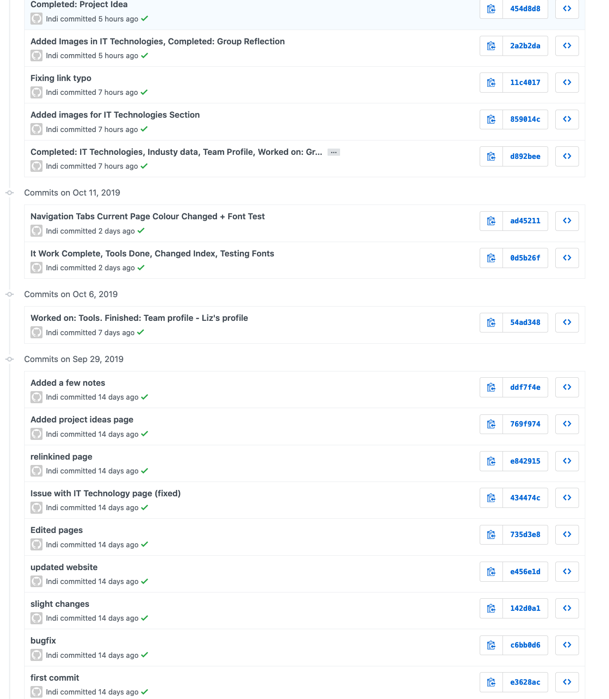

Tools (Github Setup)
Our Personal Github websites (Assignment 1)
Indi Osborne
Adam Dooley
Matthew Limbert
Manuel U Santos
Our Github setup for our 'Group Project'
For this section I will be writing it (Indi). My role for Assignment 2 involved working on the website and git repository again as I enjoyed it a lot on Assignment 1 and Assignment 2. I felt confident in my ability to do this efficiently and make sure it would be all good to go come due date. Last assignment I decided to setup the website early so we could keep track of where we were up to, this time however since we had already done the majority of the website, we decided to do it last and focus on the report. With this approach it simply meant putting all our new work into our website at the end.
Our Project website: https://github.com/indiosbornethorne/TeamProject1
Our Github repository: https://indiosbornethorne.github.io/TeamProject1/index.html
Github Commit Log:
As I said before, I setup the website for the group. Therefore I did all the pushes. Each push I did I tried to state what I had worked on for reference. Following the commit trail you can see each part of the website come together nicely. If I was to do this again I would try be a bit more specific but it is a bit hard with the chatacter limit.
(This was taken one commit before 'Final Commit')
Screenshot of log:

Group Communication
As a group we communicated through Discord.
Discord is an application that can be accessed via the web or the app itself, which allows you to create communication servers with text and voice channels. This allowed us to make rooms for different purposes and chats, and since the application is used by most of us for personal use, it meant we were already familiar with the application which meant utilising it was easy.
Screenshot of our server setup by Matthew:

Group Activity Log
Discord Server - Matthew
PDF Report - Matthew
Proof Reading/Editing - Matthew
Personal Profile Improvement - Matthew
Github Repository - Indi
Website - Indi
Team Profile - Indi
Tools - Indi
Industry Data - Adam + Manuel
IT Work - Adam
IT Technologies:
1 - Robotics - Matthew
2 - Cybersecurity - Manuel
3 - Machine Learning - Matthew
4 - Autonomous Vehicles - Adam
Project Idea - Matthew (Reworked Indi's idea from Assignment 1)
Group Reflection - Group/Matthew